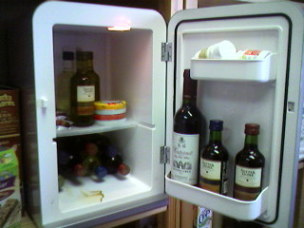
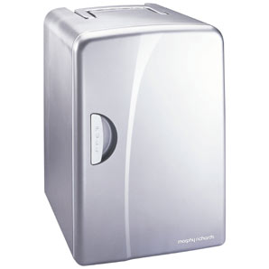
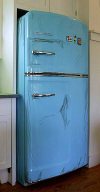
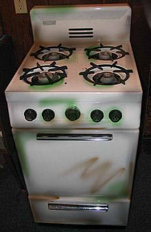
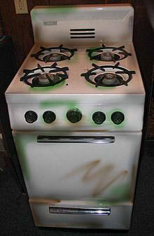

Marty's Story
Marty was a mini-fridge, he never needed much. He loved his job, which was cooling cans. Everyone loved Marty because he always had a cold drink ready. During his early years, he didn't have a family. His mother put him up for adoption when he was a child. In the kitchen, he met Fridge. Fridge treated him like his own. He spent all day looking after him and chatting with him.
One day, Marty was removed from the kitchen. He was stuffed in the car and driven out to the city. He was dumped behind a pub and left there. He began to gather dirt and looked rather unsightly. Marty is now unemployed and covered in his own fluid leakage. He can often be seen behind the pub in a heap of dirt looking for drinks to cool.
 
Marty is now unemployed and covered in his own fluid leakage

 
